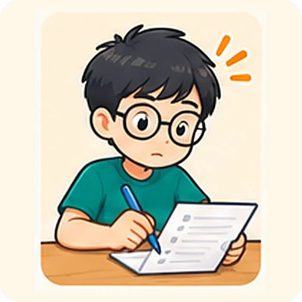
1. Minh checks the donation list twice. He is careful.
UNIT 4
Pronunciation · Vocabulary · Word family · Grammar
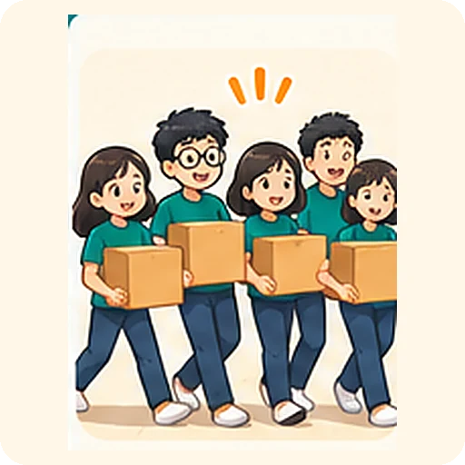
Stress in two-syllable words
A syllable is a part of a word with one vowel sound.
CLAP AND COUNT
Today: words with TWO syllables.
Which syllable is stressed?
| NOUNS | VERBS |
|---|---|
| artist → ARtist | perform → perFORM |
| talent → TALent | enjoy → enJOY |
| concert → CONcert | relax → reLAX |
What do you notice? Nouns → often 1st syllable. Verbs → often 2nd syllable.
There was an increase in house prices.
increase (n): 1st or 2nd syllable? INcrease /ˈɪn.kriːs/
We want to increase students' interest in volunteering.
increase (v) → INcrease? ✗ Oops! Wrong!
inCREASE /ɪnˈkriːs/
Same spelling, different stress!
answer (n) and answer (v): is the stress different?
noun → 1st syllable
verb → 2nd syllable
noun and verb sound the same
Usually, not always!
| WORD | NOUN | VERB |
|---|---|---|
| record | REcord/ˈrek.ɔːd/ | reCORD/rɪˈkɔːd/ |
| present | PREsent/ˈprez.ənt/ | preSENT/prɪˈzent/ |
| WORD | NOUN | VERB |
|---|---|---|
| export | EXport/ˈek.spɔːt/ | exPORT/ɪkˈspɔːt/ |
| increase | INcrease/ˈɪn.kriːs/ | inCREASE/ɪnˈkriːs/ |
| decrease | DEcrease/ˈdiː.kriːs/ | deCREASE/dɪˈkriːs/ |
| WORD | NOUN | VERB |
|---|---|---|
| conflict | CONflict/ˈkɒn.flɪkt/ | conFLICT/kənˈflɪkt/ |
| contest | CONtest/ˈkɒn.test/ | conTEST/kənˈtest/ |
| WORD | NOUN | VERB |
|---|---|---|
| progress | PROgress/ˈprəʊ.ɡres/ | proGRESS/prəˈɡres/ |
| survey | SURvey/ˈsɜː.veɪ/ | surVEY/səˈveɪ/ |
| suspect | SUSpect/ˈsʌs.pekt/ | susPECT/səˈspekt/ |
| WORD | NOUN | VERB |
|---|---|---|
| contract | CONtract/ˈkɒn.trækt/ | conTRACT/kənˈtrækt/ |
| insult | INsult/ˈɪn.sʌlt/ | inSULT/ɪnˈsʌlt/ |
| subject | SUBject/ˈsʌb.dʒekt/ | subJECT/səbˈdʒekt/ |
noun = verb
noun = verb
1. The centre keeps a record of all donations.
a. 'record
2. We will record the charity live show.
b. re'cord
3. There was an increase in house prices last year.
a. 'increase
4. We want to increase students' interest in volunteering.
b. in'crease
5. I got this present from a visitor to our centre.
a. 'present
6. We need to help local businesses to export their products.
b. ex'port
Read one sentence from Task 1.
NOUN or VERB?
1st or 2nd syllable?
Switch roles!
Our club needs more volunteers this Sunday.
We are going to a remote village, far from the city.
Please donate old books and warm clothes.
Last year, one generous shop owner gave us 200 notebooks.
Every gift will benefit the children there.
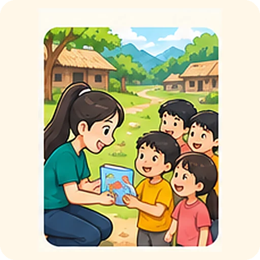
1. donate (v) c
2. volunteer (n) e
3. generous (adj) a
a. giving or willing to give freely
b. far away from places where other people live
c. to give money, food, clothes, etc. to a charity
d. to be in a better position because of something; to be useful to somebody
e. a person who does a job without being paid for it
4. remote (adj) b
5. benefit (v) d
a. giving or willing to give freely
b. far away from places where other people live
c. to give money, food, clothes, etc. to a charity
d. to be in a better position because of something; to be useful to somebody
e. a person who does a job without being paid for it
/dəʊˈneɪt/
quyên góp
People donate books and clothes to our club.
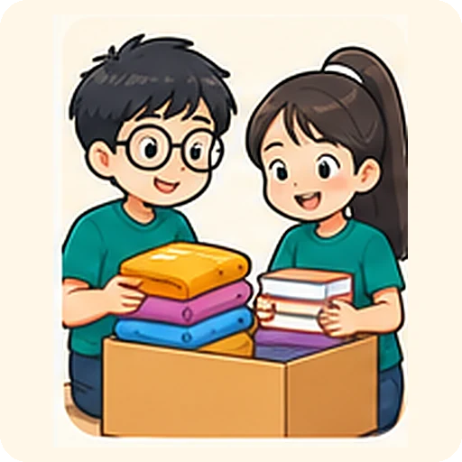
/ˌvɒlənˈtɪə(r)/
tình nguyện viên
We need a volunteer at the local centre.
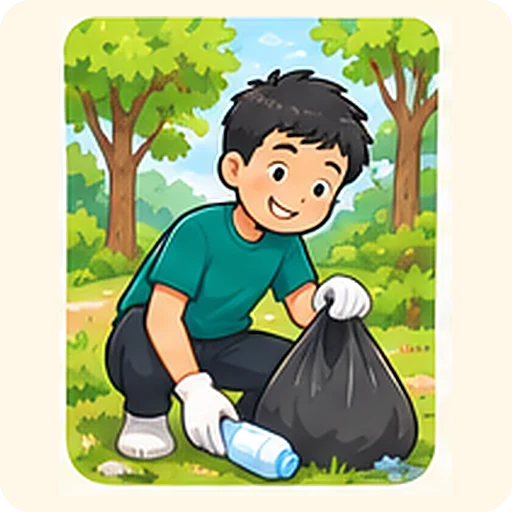
/ˈdʒenərəs/
hào phóng
Our neighbours are generous and help the club.
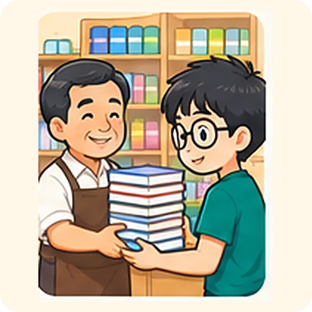
/rɪˈməʊt/
xa xôi, hẻo lánh
We teach children in a remote village.
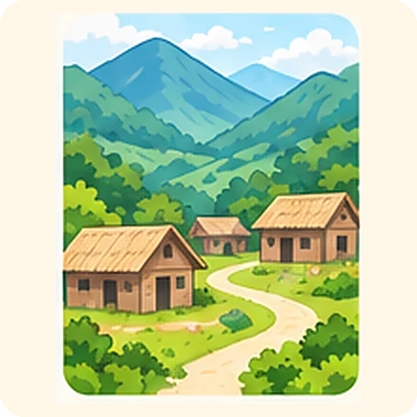
/ˈbenɪfɪt/
có lợi cho, giúp ích
This clean water project will benefit the people in the village.
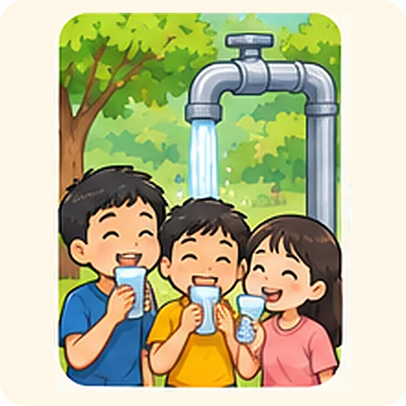
Use the correct forms of the words in 1.
1. He is very generous. He is always willing to give a lot of money to charity.
2. The school is difficult to get to because it is located in a remote area.
3. If you don't have time to volunteer, you can donate money and food.
Use the correct forms of the words in 1.
4. This clean water project will benefit the people in the village.
5. Our club needs more volunteers to clean up the park at the weekend.
Make as many adjectives as you can.
| WORD | -FUL | -LESS |
|---|---|---|
| care | careful | careless |
| use | useful | useless |
| harm | harmful | harmless |
| WORD | -FUL | -LESS |
|---|---|---|
| hope | hopeful | hopeless |
| home | – | homeless |
| success | successful | – |

1. Minh checks the donation list twice. He is careful.
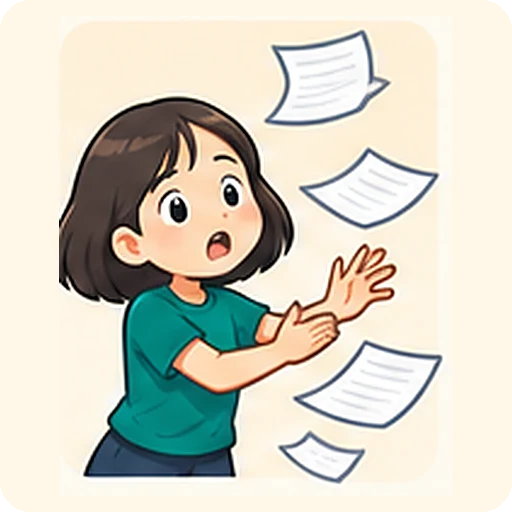
2. An never checks the list and often loses it. She is careless.
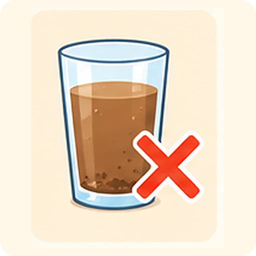
3. This water is not clean. It is harmful to children.
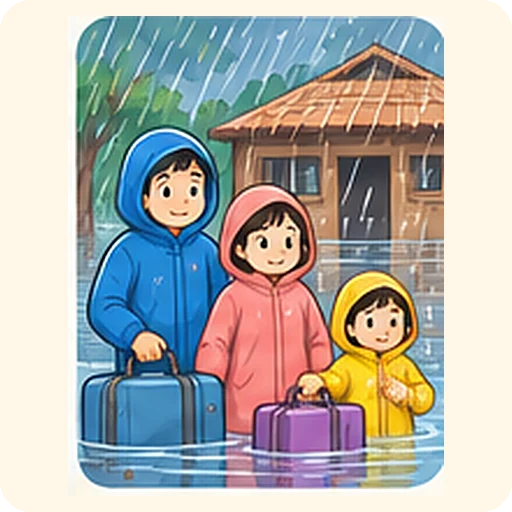
4. After the flood, many families had no house. They were homeless.
What does -less mean?
I was hopeless at maths. = very bad at maths
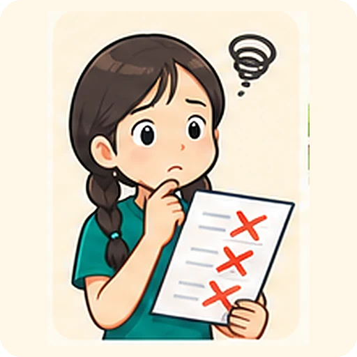
helpful is NOT the opposite of helpless.
The opposite of helpful is unhelpful.
helpless = not able to do anything to help yourself
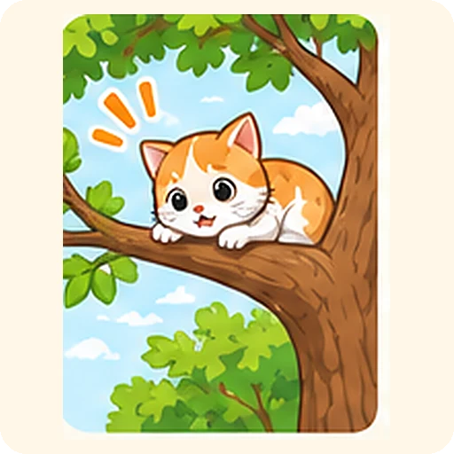
Complete each sentence with the correct -ful or -less adjective.
1. Be careful when you pack the glass bottles. (care)
2. After the flood, several families were homeless. (home)
3. Our volunteers were very helpful to the villagers. (help)
Write your answers, then compare with a partner.
Read each full sentence aloud.
Complete each sentence with the correct -ful or -less adjective.
4. This broken map is useless for finding the village. (use)
5. Minh felt hopeful about the charity project. (hope)
6. An was careless and lost the donation list. (care)
Write your answers, then compare with a partner.
Read each full sentence aloud.
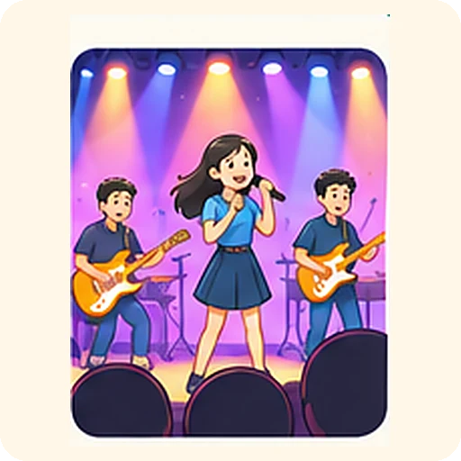
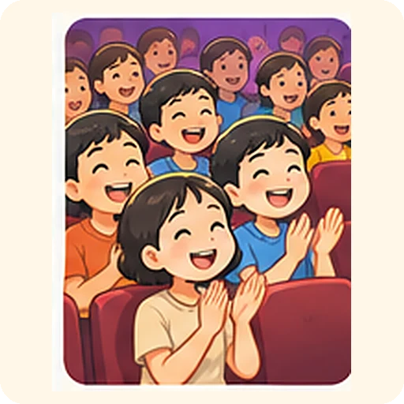
Which word tells us how people feel?
Which word tells us what causes the feeling?
how people feel
what causes the feeling
| BASE | -ED | -ING |
|---|---|---|
| excite | excited | exciting |
| interest | interested | interesting |
| bore | bored | boring |
| surprise | surprised | surprising |
Who is more fun to sit next to?
Compare: He is bored. → his feeling
He is boring. → what causes the feeling
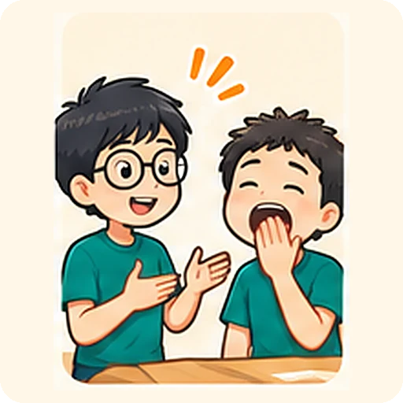
Write the correct -ed or -ing adjective using the word in brackets.
1. The community project sounds interesting. (interest)
2. Lan is interested in helping local children. (interest)
3. After the long trip, we were tired. (tire)
Write your answers, then compare with a partner.
Read each full sentence aloud.
Write the correct -ed or -ing adjective using the word in brackets.
4. Carrying all those boxes was tiring. (tire)
5. We were amazed by the kind gifts. (amaze)
6. The charity performance was amazing. (amaze)
Write your answers, then compare with a partner.
Read each full sentence aloud.
Hold up ED or ING.
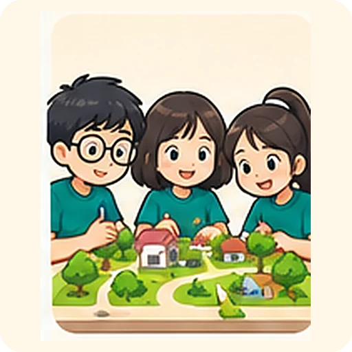
1. This project is very interesting. (interest)
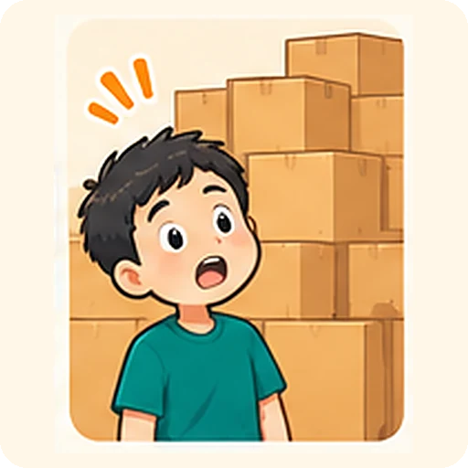
2. We were surprised by the number of donations. (surprise)
Hold up ED or ING.
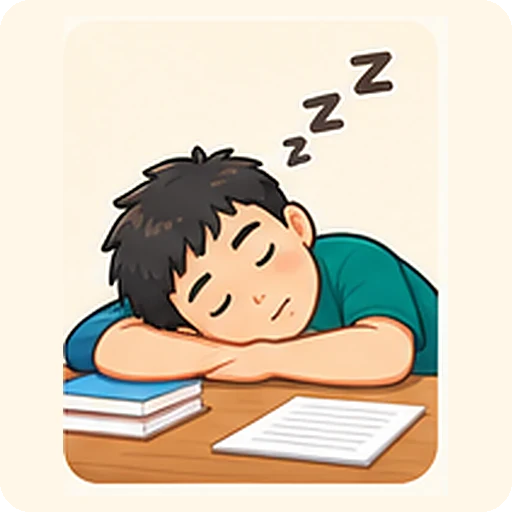
3. The meeting was so boring that I fell asleep. (bore)
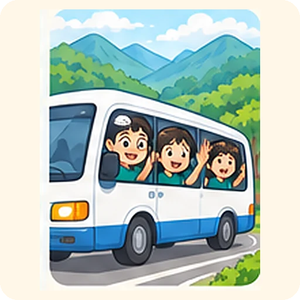
4. I am excited about the trip to the remote village. (excite)
1. We need to be careful when we record the donations.
2. I am interested in community development activities.
3. There are exciting volunteering opportunities in our community.
4. Last year, I was hopeless at maths. I couldn't even do simple addition in my head.
Choose the ending by meaning: having • without • feeling • causing a feeling
COMPARE: I am bored. (my feeling) The meeting is boring. (the cause)
Select a branch to read its examples.
Last week, I was ______ when ______.
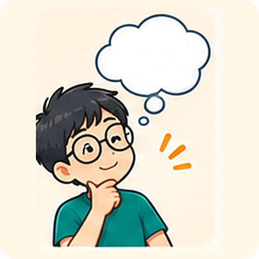
What happened to the volunteers?
Explore the story, then return to this lesson.
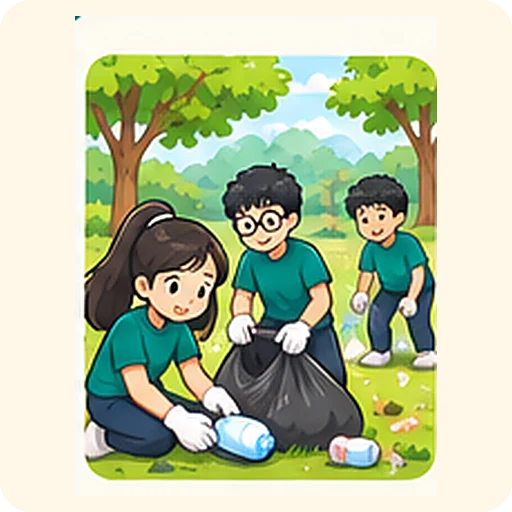
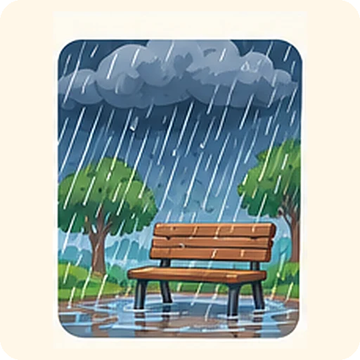
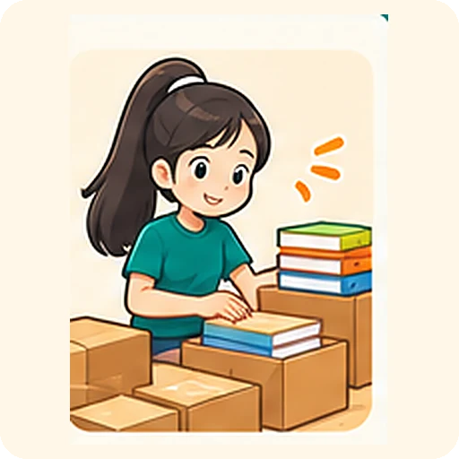
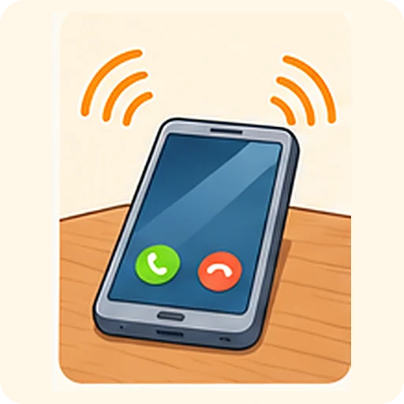
Which action was longer? Draw the timeline.
They were cleaning the park when it started to rain.
Which verb form shows the longer action?
Which one shows the shorter action?
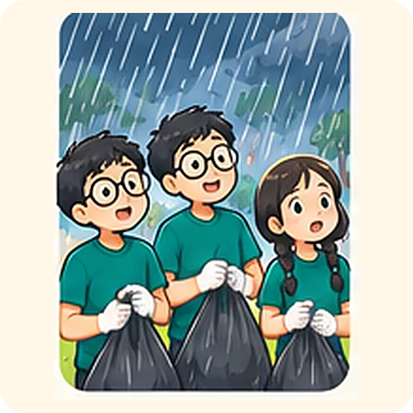
While Lan was sorting the donations, the phone rang.
Which verb form shows the longer action?
Which one shows the shorter action?
We use the past continuous for a past action in progress (longer action).
We use the past simple for an action which interrupted it (shorter action).
an action in progress in the past (longer action).
an action which interrupted it (shorter action).
I was reading an article when she called.
While I was reading an article, she called.
When I was reading an article, she called.
WHEN: either tense
WHILE: usually Past Continuous
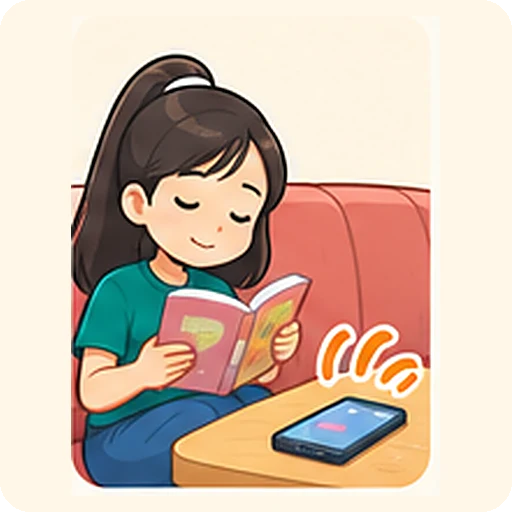
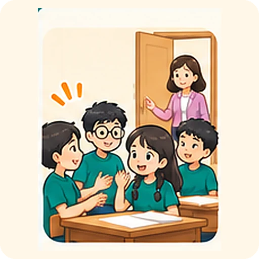
A. When the teacher came in, we were talking.
We were already talking. Then the teacher came in.
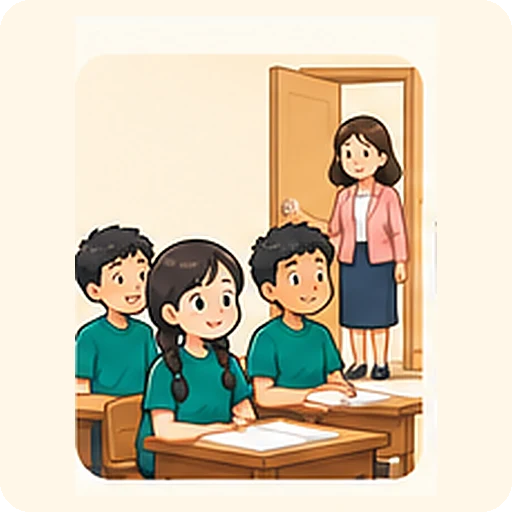
B. When the teacher came in, we stopped talking.
The teacher came in. Then we stopped talking.
1. While Lan was working as a volunteer in the countryside, she met an old friend.
2. I was revising for my civics class when my dad told me about the volunteer job.
3. We saw many unhappy children while we were helping people in remote areas.
4. He was sorting the donations when he realised how generous people were.
1. They were cleaning the streets. It started to rain.
While they were cleaning the streets, it started to rain.
/ They were cleaning the streets when it started to rain.
2. I was watching TV. I saw the floods and landslides in the area.
While I was watching TV, I saw the floods and landslides in the area.
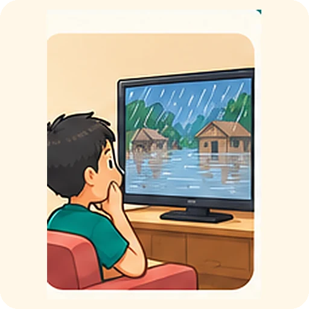
3. Tim was searching for employment opportunities. He found a job advert from a non-governmental organisation.
While Tim was searching for employment opportunities, he found a job advert from a non-governmental organisation.
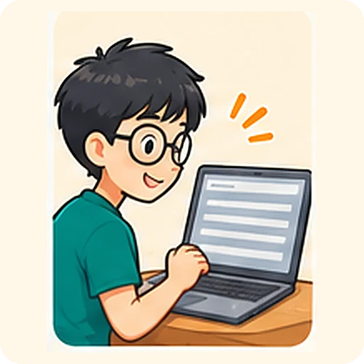
4. They decided to help build a community centre for young people. They were visiting some poor villages.
They decided to help build a community centre for young people while they were visiting some poor villages.
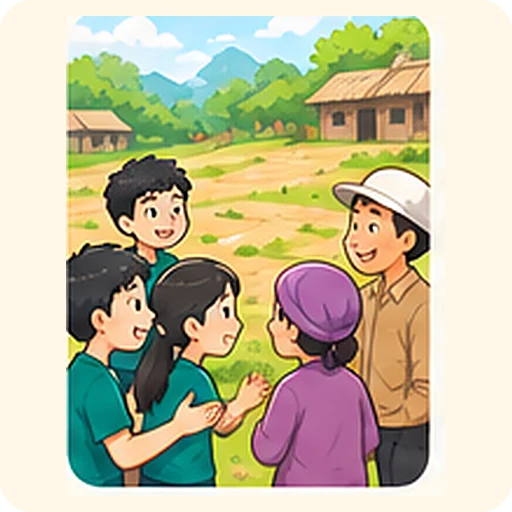
Ask: Is the action completed, in progress, interrupted or happening at the same time?
REMEMBER: Choose the TENSE by the action, not simply by WHEN or WHILE.
Select a branch to read its examples.
The donation box disappeared at 7 p.m. yesterday!
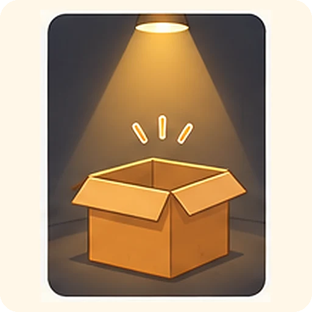
1. What were you doing when the box disappeared?
2. Where were you standing at that time?
3. Who were you with?
4. What were they doing while you were talking?
5. What happened while you were there?
6. What were you wearing?
Student A was ______ing when ______, but Student B was ______ing.
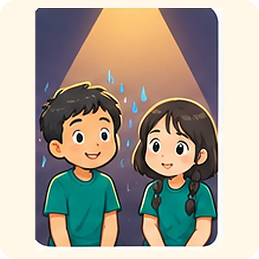
HOMEWORK: Do the workbook exercises.
Prepare for Lesson 3: Reading (page 45).
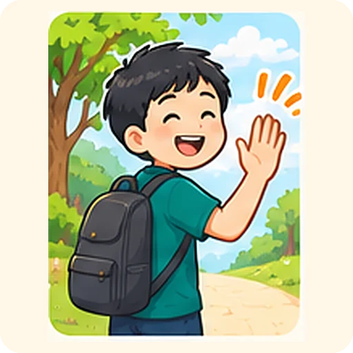